Episode 9
Meta:
Some friends told me I should come up with a catchy name for this newsletter so from here on out I’m calling it “Trashy Tales”
Monday
This week we begin our transition from work being normal to work being me handing stuff off and taking it chill. A lot of it is catching up with people and having some last chats with them and what not. After work I take it chill and work on a personal project. I’m not gonna give too many details about this because I’m going to be launching it next week (next Monday in fact) so expect a big mention about it then. Coincidentally next week will also mark the 10th week of this newsletter!! I’m not important enough to do some sort of 10 newsletter special but I do expect next weeks newsletter to be a big one so look forward to it!
Tuesday
Today we have quite a bit of rain. So much so that getting to work is a gosh darn odyssey. I hate the rain and today is no exception. Let me draw out what getting to work is like for me
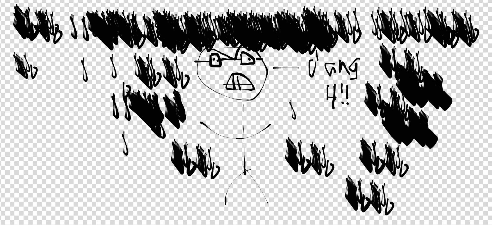
As the walk goes on the fire in my soul burns deeply as I curse the rain with every fiber of my being. As I get to 2 blocks from my office I see THIS
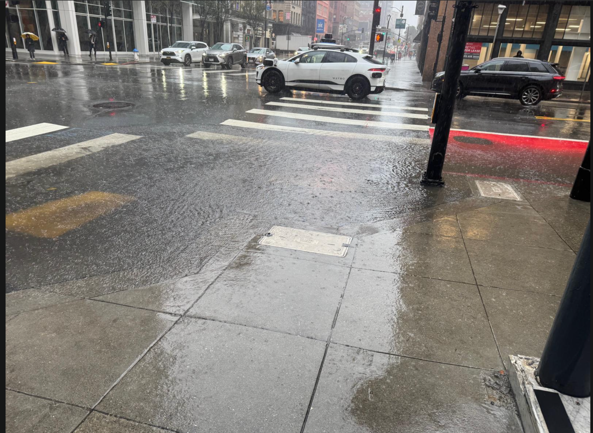
I had to take a couple block detour to avoid my feet getting absolutely SOAKED and it was painful. As I was deciding the best way around this “puddle” at one point it made like water at the beach and rose up toward me. To all you who say the Bay Area doesn’t have seasons I ask you what the benefit of these supposed “seasons” is. I unashamedly would LIKE if every day was nice and sunny.
When I got to work my feet were still soaked so me and some coworkers resorted to some “interesting” measures of drying our feet
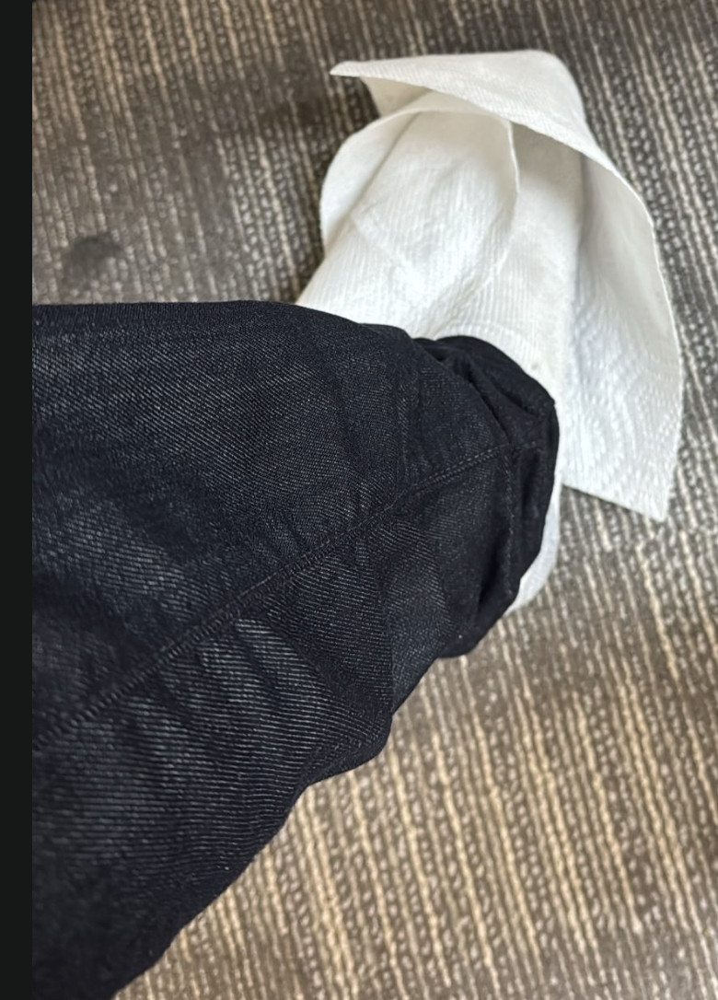
After work I continued to work on my personal project
Wednesday
Our day begins at about 2:50 AM when I wake up and can’t really go back to sleep. I read up on how to scale distributed model training with TPUs which is super interesting. I then go to work and have some 1:1s with coworkers now that I’m leaving.
As I take the Caltrain back from Redwood City I’m initially poised to go to run club only to find that some of my friends are having a grilled meat night. This poses quite the moral dilemma as I initially committed to going to run club but holy heck does grilled meat sound GOOD! I weigh my options carefully and decide to honor my commitment and go to run club!
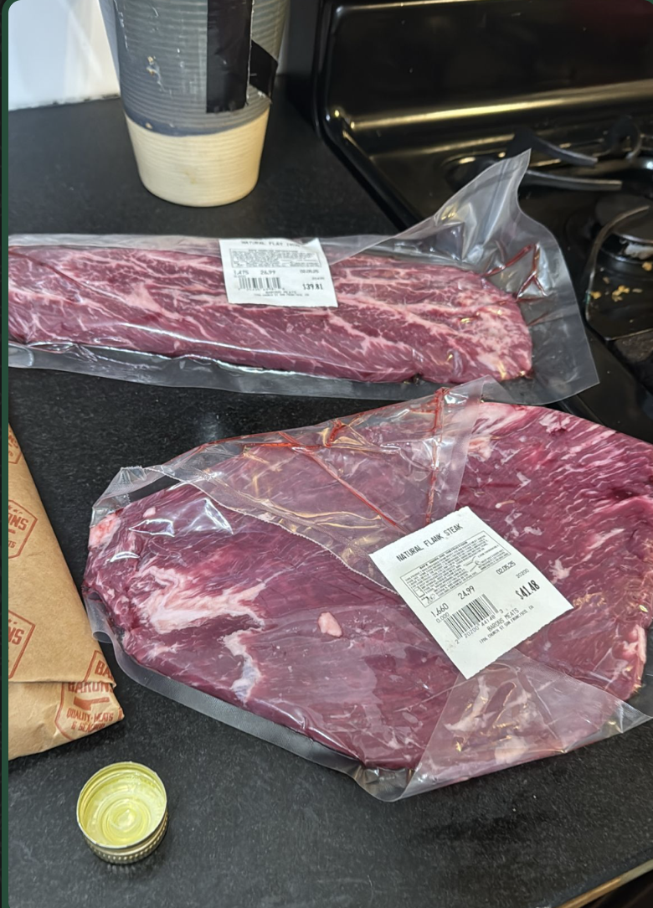
As the picture above indicates I blatantly lied above and chose to eat meat instead. I wish I could say I regretted flaking on my commitment but that meat was too freakin good.
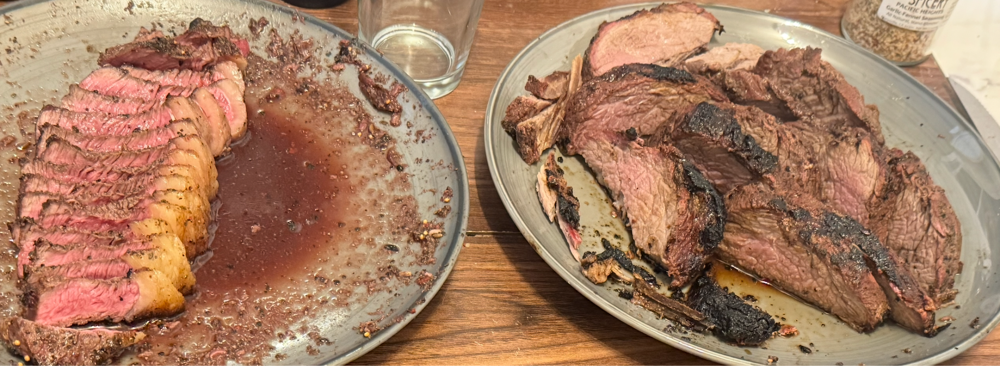
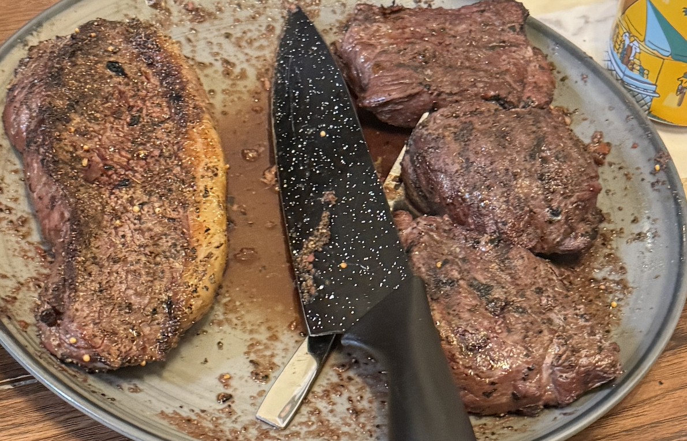
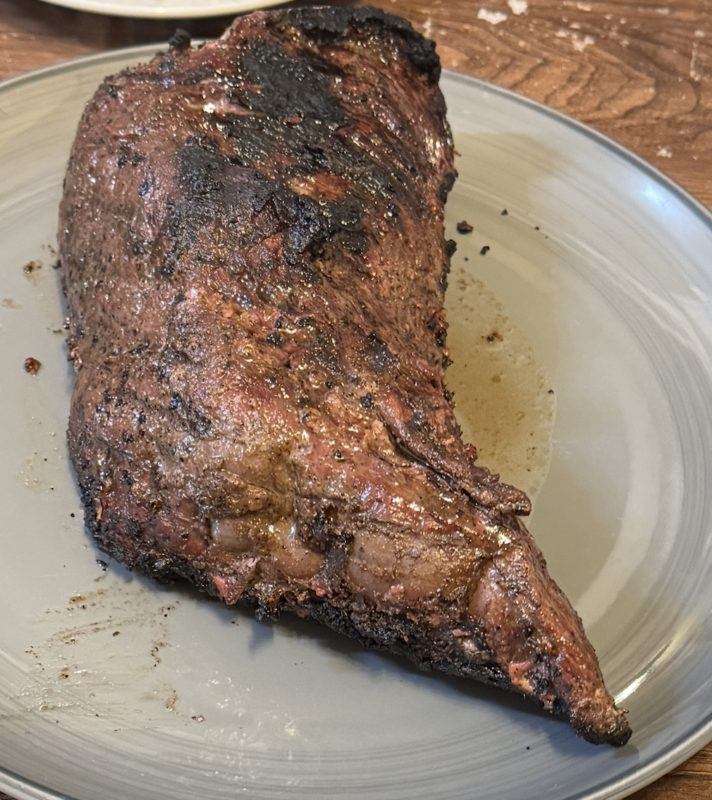
Perhaps a slight punishment was the fact that because they used a charcoal grill my clothes ended up smelling like charcoal so I couldn’t wear my unicorn hat for a few days. WORTH IT!
Thursday
Unfortunately the rain rears its ugly head again but thankfully it wasn’t a full on onslaught like Tuesday was. I spend the evening after work playing a board game with some coworkers. We play a game called Root which is super fun! Basically its a game where we each play as a different species and try to get victory points while moving around in a forest but each species has different conditions for getting victory points so its an asymmetric game. Since its my first time playing I lose pretty badly but its definitely a game I want to try and get better at!! While this is happening I steal some snacks from the office kitchen. At first I try to wait until some coworkers are out of the kitchen before stealing all the dried mangos but since I’m leaving soon anyway I say screw it and take them all. One of my coworkers asks if I just took all of them and I just say yes. I then check out the rainy version of first thursday thats happening this week but due to me wanting to go home and eat lamb I don’t stick around for long. Thats kinda a shame because one of my friends was there and from the video she sent there was a party happening.
Friday
Today we have engineering demos at work where folks from engineering show off different things they built. I MC the demos today which is mainly an excuse for me to tell a whole bunch of jokes. This goes well and my coworkers mostly enjoy my jokes and it was fun doing this for the last time. It probably shouldn’t come as a surprise to folks that I enjoy MCing things.
After work I play online Dune Imperium and lose terribly. While doing so I work more on the project I’m launching next Monday.
Saturday
Finally the weather is nice for a change! I start my morning by going on a walk up to Tank Hill and basking in the nice view. I LOVE doing this on a nice weekend morning and its one of my favorite ways to start the day.
After this I go to trash pickup where we get a lot of people due to the nice weather and its a grand ol time.
From there I go to Golden Gate Park where I do a field day with friends. I wind up playing a lot of spikeball which is pretty fun. Usually when its daylight savings I like to play spikeball with friends in the Panhandle every Tuesday but since the days are short right now that won’t come back until March so this was a nice dose to keep me going.
In addition to spikeball we play a bunch of egg based games like an egg toss and egg spoon racing. The egg toss doesn’t go super well for me when after 3 throws it breaks on my pants
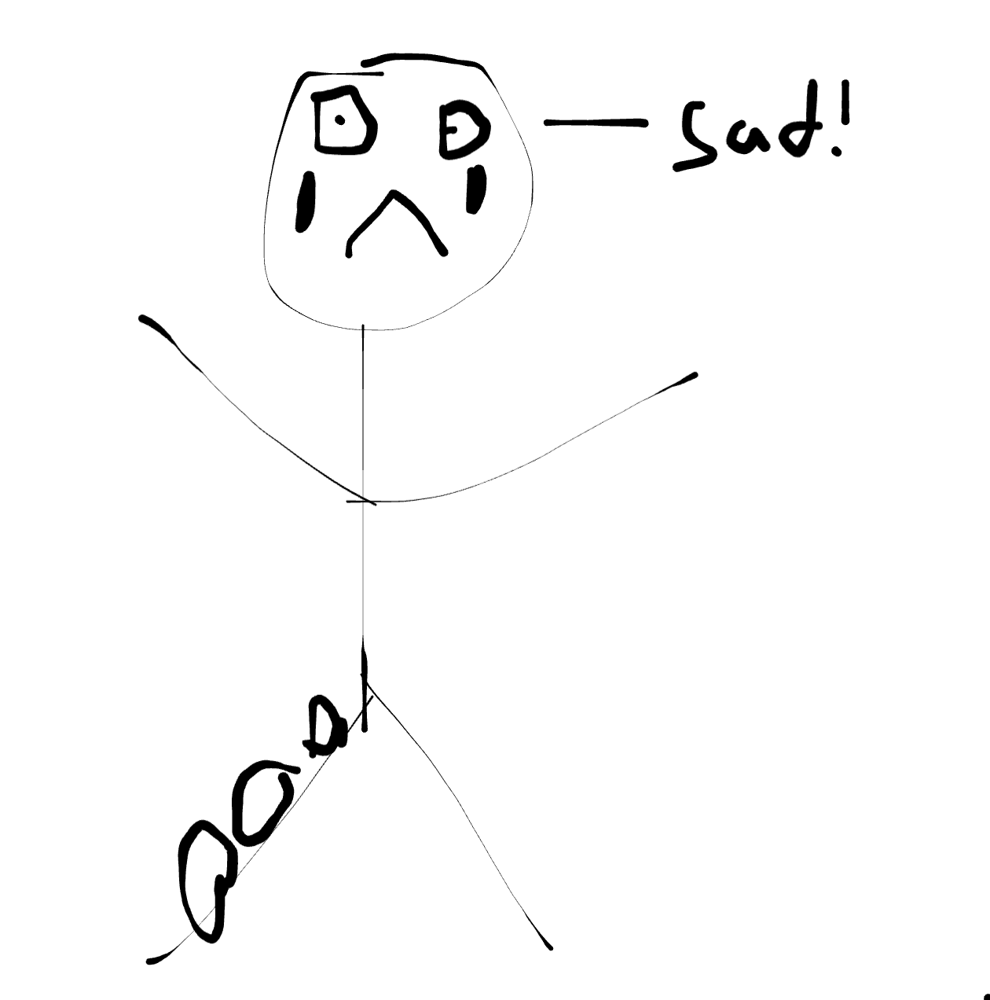
Theres also a bunch of spoon based events where you have to race while carrying an egg on a spoon without dropping it. These included a straightforward version, a version where you carried the egg in a spoon and the spoon in your mouth, and a version where you carried the spoon backwards
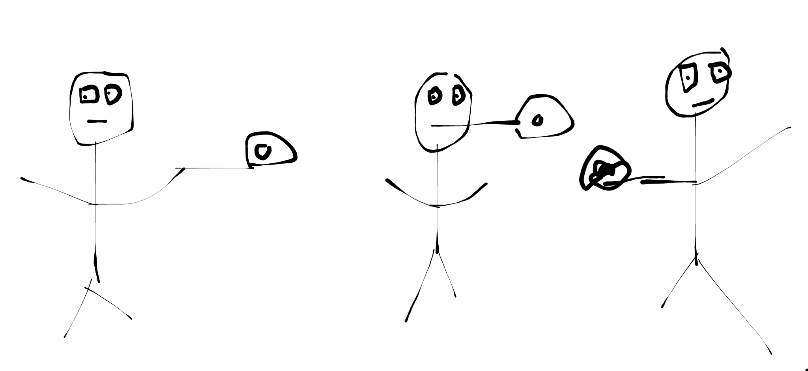
Originally after field day I was going to play some more online Dune imperium but I take a rain check on that. Well rain check isn’t technically the right phrase
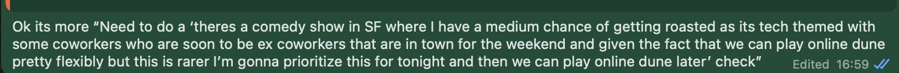
As the text implies instead of playing online Dune I go to a comedy show where the comedians roast techworkers. Its a pretty well known one. For this show the comedians roast tech people in the audience by making fun of them. Some of my co workers were going and I thought it would be pretty fun.
When buying tickets I see there is an email where you can apply to try and be roasted which I eagerly crave so I gave it my best shot!
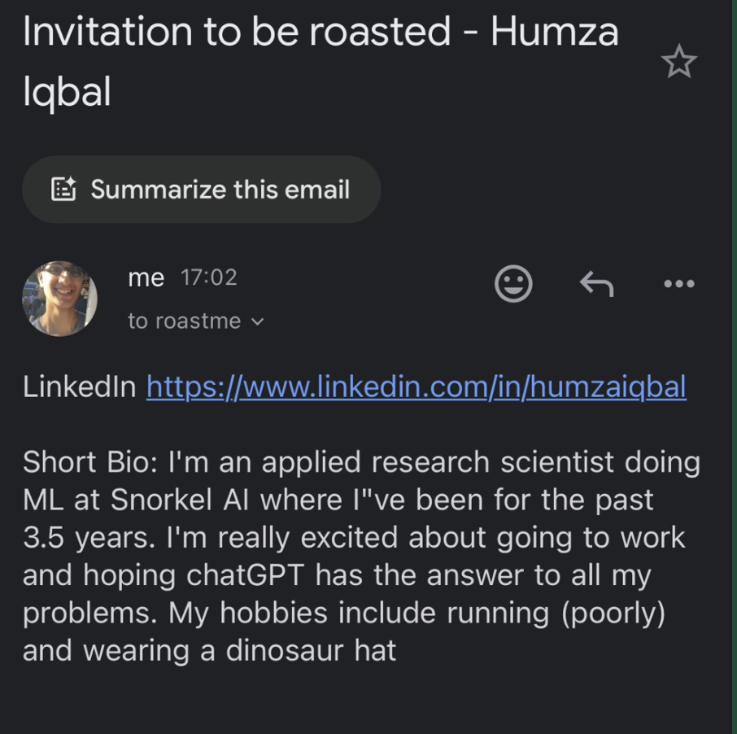
The show itself is really fun but they unfortunately don’t pick me :( . This was kinda sad as I made sure to where my dinosaur hat (the older sibling of the unicorn hat AKA the chastity hat). Some highlights of the show
Roasting the CTO of a tech company in no small part for his haircut
Roasting PMs for being useless
Roasting the process of being on call
A lot of it is pretty standard stuff but its still fun nevertheless. I also see a number of tech people I know from various places which is pretty fun including some old college friends and one of the few people who I’ve genuinely disliked but thats a story for another time.
From there I go to get dinner with my coworkers where I proceed to order my usual,
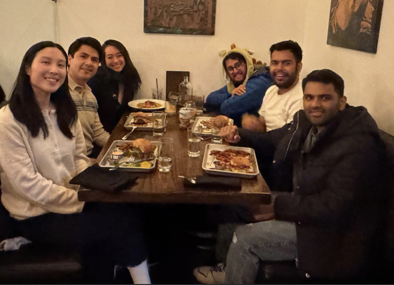
Sunday
My day starts at about 4:30 AM when I wake up, go on Twitter, and get inspired to do a quick ML experiment. I see something on there that makes me ask the question “How would a neural net do on MNIST if I freeze all but one parameter? Then what about all but a subset of parameters in a weight matrix? And so on”. I quickly find that it gets progressively better the less parameters I freeze which makes sense and I realize that if I freeze all but half the parameters in the final weight matrix it can learn something. Not a comprehensive experiment but a quick morning project.
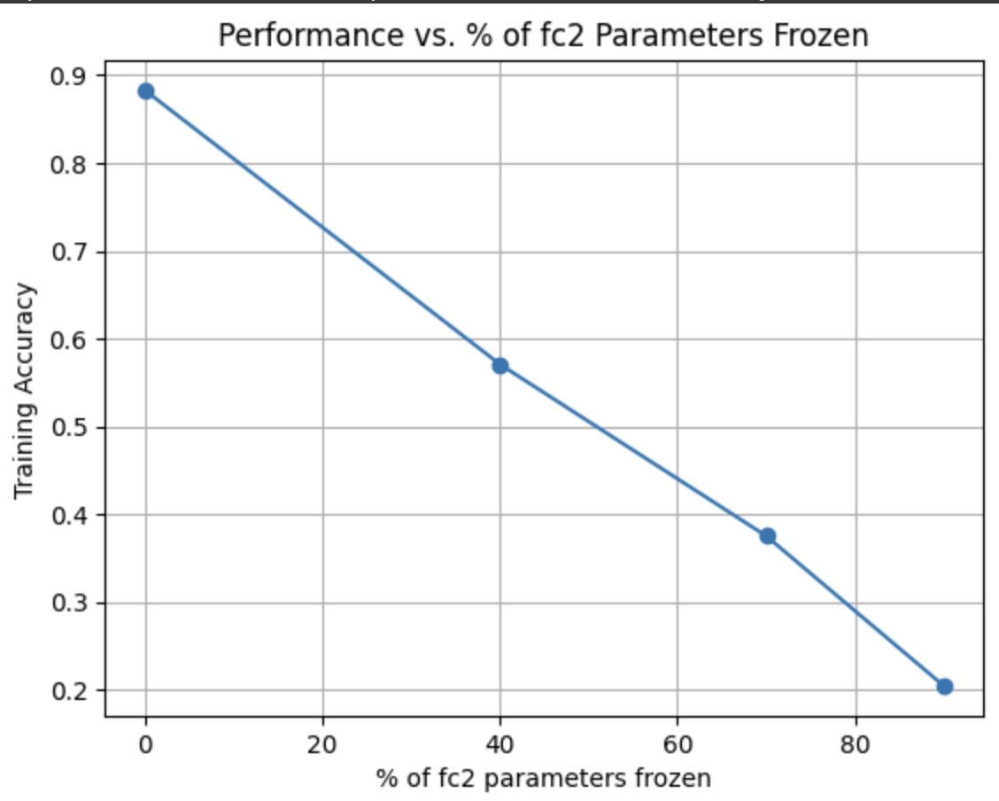
(I realize only one to two people who read this newsletter do anything related to AI / ML but I hope you one / two appreciate this)
From there I take a lovely walk up to Tank Hill to bask in the view and then go to trash pickup. Unfortunately this trash pickup was not my strongest as I pick up too much trash and my friends wind up helping me carry it all back.
On top of that one of our friends comes late to meet us and I accidentally tell him to come to Dolores rather than Mission. Later he lets me know of this and this drawing perfectly captures my reaction
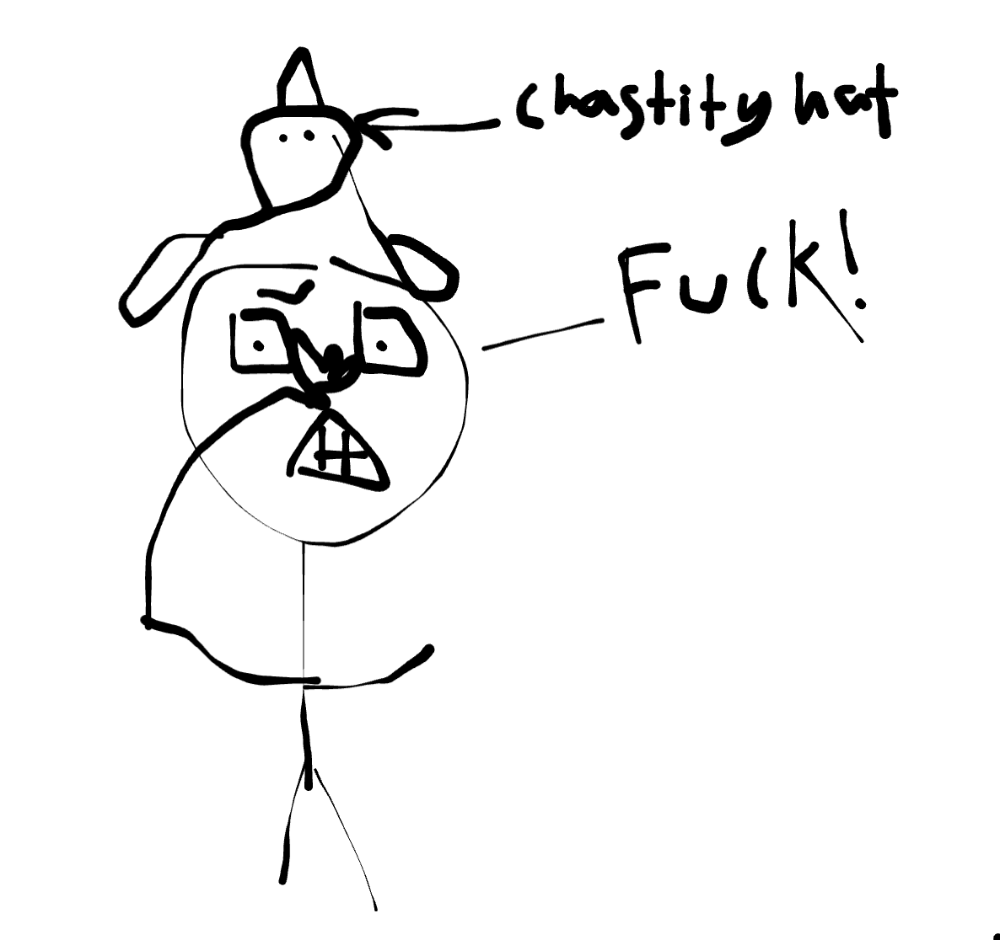
As someone who prides himself in his street geography; especially where the mission is concerned I did literally face palm. One of my friends afterwards drops this excellent quote
“Comparing Mission Street to Dolores is like engaging with the duality of man” - R
After enjoying the nice day some more I go to a Superbowl party to watch the game. I’m not a big sports fan but I decide to root for the Eagles instead of the Chiefs for two reasons
I like Eagles as my street address growing up had Eagle in it
As a non Swifty I don’t wanna root for the team that people would root for because her boyfriend is a player there
While the game is happening I realize I don’t really care for the ads like I used to. I used to really enjoy seeing them but now I’m mostly like “whatever”. I think this is because watching ads isn’t something I do nearly as much anymore so now the fact that some ads are a bit more entertaining doesn’t hold the same value for me. The only ads that were somewhat interesting were the ones where I had no idea what product they were for until the very end and the Open AI one mainly because I knew it was coming and wanted to see what they would do. The half time show is reasonably good as I am a Kendrick fan. I also did enjoy seeing the Eagles utterly trounce the Chiefs in the first 3 quarters.
During the game I realize I might have potential to be a football player. In the commentary they are talking about offensive lines at one point and I realize between my bomb joke and my yellow fever joke I have some offensive lines. Who knows maybe my time will come :D.
After watching the game I go home and write up the newsletter!